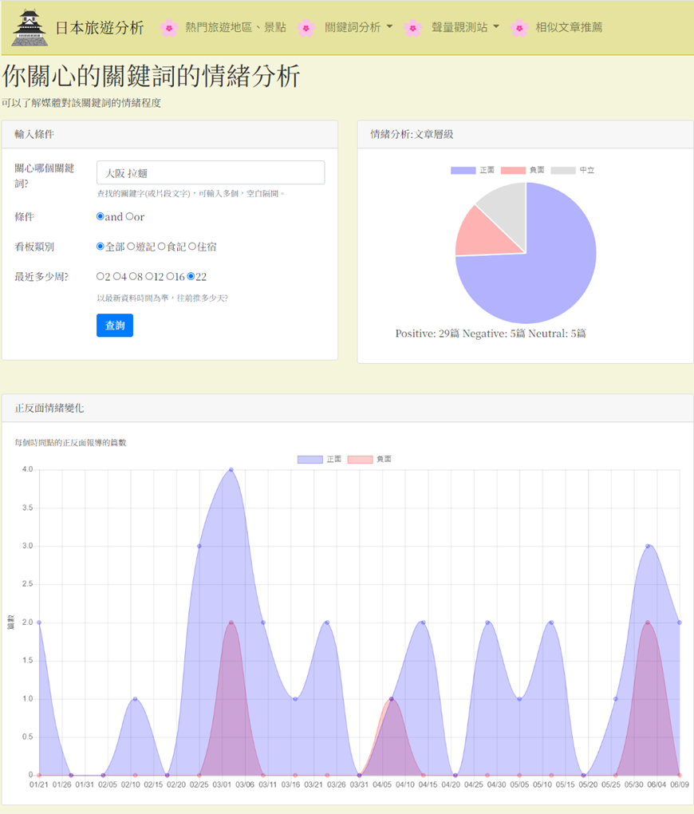

碩士大數據輿情分析-日本旅遊分析





HTML
JavaScript
Python
BeautifulSoup
CKIP Transformers
Pandas
Django
BERT
專案概述
使用 Python (BeautifulSoup)自動爬取 PTT 日本旅遊版數據，結合 中研院中文斷詞 (CKIP Transformers)進行斷詞，並運用 BERT預訓練模型進行深度情緒分類，判別社群輿論之正負面評價。透過 Pandas 進行數據清洗、統計處理及關鍵詞關聯性計算。最後以HTML、JS、Bootstrap 4，製作響應式數據儀表板，提供直觀的互動式圖表分析。
技術架構
關鍵詞熱門度分析
追蹤特定旅遊關鍵詞隨時間變化的討論熱度。
全文檢索與關聯詞分析
透過文字雲與關聯計算，找出與核心議題同時出現的高頻詞彙。
關鍵詞情緒分析
量化社群對特定景點或美食的偏好程度（正面/負面/中立）。
區域與美食聲量監測
對比日本各大熱門旅遊城市（東京、京都、大阪）及知名美食的討論聲量佔比。
案例分析
旅遊趨勢觀測
以「京都 櫻花」為例，分析 22 週的歷史數據。透過聲量數據趨勢圖，觀測到賞櫻高峰期出現在4月7日，可作為旅遊行程規劃的重要參考。
語意關聯分析
針對「東京 淺草」進行關聯分析，結果顯示「房間、空間、車站、方便」為高頻熱門詞彙。技術數據證明淺草區因交通位置便捷、鄰近車站，是台灣遊客首選的住宿區域。
消費者情緒回饋
以「大阪 拉麵」為例，系統過濾出 39 篇相關評論，經 BERT 模型 分析發現其中 29 篇為正面評價。這顯示大阪拉麵店在台灣社群中擁有高度滿意度。